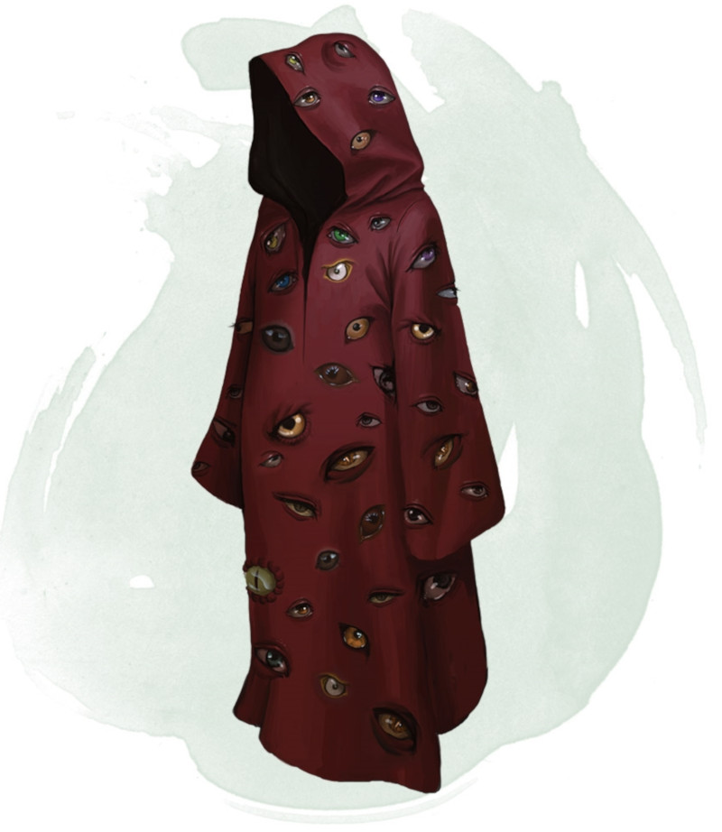

Robe de vision totale
[ Robe of Eyes ]
Objet merveilleux, rare (nécessite un lien)
Cette robe est ornée de motifs en forme d'yeux. Tant que vous êtes équipé de cette robe, vous gagnez les bénéfices suivants :
• La robe vous permet de voir dans toutes les directions, et vous avez un avantage à vos jets de Sagesse (Perception) basés sur la vue.
• Vous avez la vision dans le noir à 36 mètres.
• Vous pouvez voir les créatures et objets invisibles, de même que ceux se trouvant dans le plan éthéré, à 36 mètres.
Les yeux sur la robe ne peuvent être fermés ou détournés. Et même si vous fermez ou détournez vos propres yeux, vous n'êtes jamais considéré comme en train de le faire tant que vous êtes équipé de cette robe.
Un sort de lumière lancé sur la robe ou de lumière du jour lancé à 1,50 mètre de la robe vous aveugle pendant 1 minute. À la fin de chacun de vos tours, vous pouvez effectuer un jet de sauvegarde de Constitution (DD 11 pour le sort lumière ou DD 15 pour le sort lumière du jour), mettant à terme à l'aveuglement en cas de réussite.
• La robe vous permet de voir dans toutes les directions, et vous avez un avantage à vos jets de Sagesse (Perception) basés sur la vue.
• Vous avez la vision dans le noir à 36 mètres.
• Vous pouvez voir les créatures et objets invisibles, de même que ceux se trouvant dans le plan éthéré, à 36 mètres.
Les yeux sur la robe ne peuvent être fermés ou détournés. Et même si vous fermez ou détournez vos propres yeux, vous n'êtes jamais considéré comme en train de le faire tant que vous êtes équipé de cette robe.
Un sort de lumière lancé sur la robe ou de lumière du jour lancé à 1,50 mètre de la robe vous aveugle pendant 1 minute. À la fin de chacun de vos tours, vous pouvez effectuer un jet de sauvegarde de Constitution (DD 11 pour le sort lumière ou DD 15 pour le sort lumière du jour), mettant à terme à l'aveuglement en cas de réussite.
Dungeon Master´s Guide (SRD)
